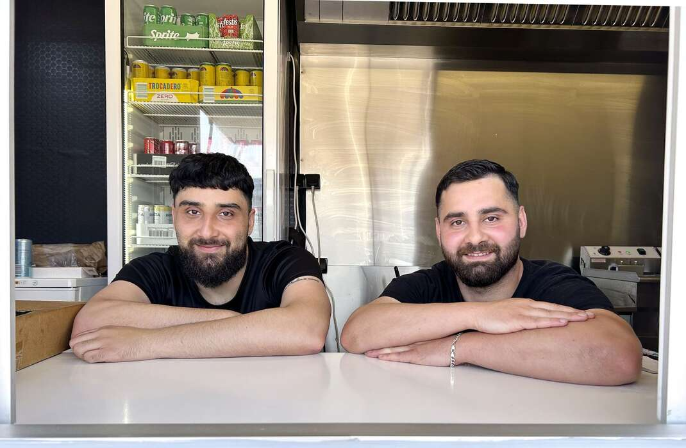

Två bröder bakom grillen

Ishak Abika
Ishak växte upp i Borlänge och spelade fotboll under tre säsonger för Dalkurd FF. Efter avslutad elitidrott och IT-studier vid Folkuniversitetet föddes idén att skapa en genuin smash burger-upplevelse i hemstaden.
Månader lades på att hitta rätt leverantör av färskt svenskt nötkött med optimal fetthalt för maillardreaktionen, samt ett lokalt bageri för de luftiga briochebröden.

Mustafa Abika
Mustafa leder det dagliga hantverket vid stekbordet i trucken på Södra Backa. Med full kontroll över temperaturen ser han till att varje puck smashas hårt och får den krispiga, karamelliserade stekytan som definierar en äkta smash burger.
Hos Ishak's finns inga genvägar eller värmelådor: allt pressas och steks rykande färskt direkt när du beställer vid luckan.